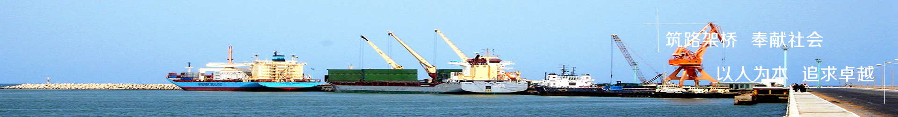

International Master in Business Informatics (Oct.2022 to Present)
The Faculty of Economics, University of BELGRADE
Mechanical design and manufacturing Automation(Sep.2014 to Jun.2018 )
TChangchun Institute of Technology
HR Manager (December.2021 to Present)

Project New Belgrade-Surcin Autoput E763, China Communitacions Construction Company Ltd
HR Manager assistant
(April.2019 to December.2021)
Project Obrenovac-Surcin Autoput E763, China Communitacions Construction Company Ltd
Mechanical Equipment officer
(July.2018 to April.2019 )
I have passed the National English Test Band 4 and can operate professional software such as CAD and CATIA as well as basic office software.
I can work under certain pressure. I am serious, practical and responsible. I am optimistic, cheerful and positive, with a strong sense of teamwork and good organizational ability.